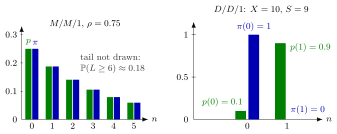

Poisson Arrivals See Time Averages¶
Theorem¶
Let be the long-run fraction of time that the system contains jobs, the long-run fraction of arrivals that find jobs just before they arrive, the arrival rate, and the state-dependent arrival rate, the rate of arrivals while the system is in state . If all these limits exist, then for every state
Hence, if the arrival rate does not depend on the state, , the arrival-average and time-average state probabilities coincide:
If the arrival process is a Poisson process, then for all , so Poisson arrivals see time averages (PASTA). The notes state this corollary without proof, since a rigorous proof is difficult.
Interpretation¶
What arrivals see generally differs from what holds over time; PASTA says that the two agree for Poisson arrivals. Poisson arrivals come at moments that are independent of the past, so they cannot favour quiet or busy periods: they sample the system as if an inspector dropped by at random times.

The left panel is the queue of Example 1 with : the time-average probabilities (green, from the level-crossing equation) and the arrival-average probabilities (blue) are equal, as PASTA says; the bars stop at , and the remaining mass is not drawn. The right panel is Example 2 with regular arrivals: the system is empty only of the time, yet every arrival finds it empty.
The discrete-time picture in the notes explains the condition. With if a job arrives in period , the arrival sees , which depends only on . If is independent of these, the conditional probability equals , which is the fraction of time with jobs. Regular arrivals, or customers who come only when the queue is short, break this independence.
Two slips are common. PASTA concerns the arrival process, so it applies to the queue but not to the queue, whose service times are exponential but whose arrivals are not. And PASTA gives the distribution seen at arrival; it does not by itself give the waiting time, which also needs the remaining service of the job in service. The memoryless property supplies this for exponential service.
Key Results¶
- for every state whenever the limits exist (Theorem 4.5.1); summing over gives .
- implies (Theorem 4.5.2); Poisson arrivals have (Corollary 4.5.3).
- In a stable queue a fraction of the arrivals finds the server busy and a fraction finds it idle (TF 4.5.2).
- queue: by PASTA an arrival finds on average jobs, each needing on average (for the job in service by memorylessness), so . With Little's law this gives
- fails for the queue, because the remaining service time of the job in service is not distributed as a full service time (Ex 4.5.8).
- PASTA does not hold for general queues (TF 4.5.5); the level-crossing equation gives a companion result relating arrival and departure averages.
Examples¶
1. queue. Let and per hour, so hours and . Then hour, , hours, and . As checks, , and . By PASTA, of arrivals find the server idle.
2. Regular arrivals do not see time averages. Jobs arrive every minutes and need minutes each. Over each minutes the system holds one job for minutes, so and , but every arrival finds the system empty: . Here per minute, while all arrivals occur in state , which occupies a fraction of the time, so and . Indeed .
3. The inspection paradox. Mr Johnson walks to a railway crossing at random times and notes the direction of the first train to pass; trains alternate east and west, yet about of his first trains go east. One timetable that explains this: every hour an eastbound train passes at minute and a westbound train at minute . He meets a westbound train first only if he arrives during the minutes after an eastbound train, a fraction of the time; otherwise, a fraction , he meets an eastbound train. His random visits sample time, so they see time averages, while counting trains is an average over trains.
Prerequisites¶
- Poisson Process
- Arrival-Average State Probability
- Time-Average State Probability
- Arrival-Average Performance
- Time-Average Performance
Related Concepts¶
- State-Dependent Arrival Rate
- Level-Crossing Equation
- Little's Law
- M/M/1 Queue
- M/M/1/K Queue
- Pollaczek-Khinchine Formula
- Remaining Service Time
- Arrival Theorem
Sources¶
- Stochastic Operations Research · Week 4
- N. D. van Foreest, Sample Path Analysis and Simulation of Stochastic Systems, Section 4.5
Aliases: PASTA, PASTA property, Poisson arrivals see time averages, Poisson arrivals see time-averages Keywords: \pi(n) = p(n), \lambda \pi(n) = \lambda(n) p(n), arrival-average equals time-average, sampling at arrival epochs, inspection paradox, M/M/1 mean sojourn time, E[J] = E[S]/(1-\rho) Symbols: infinity, lambda, mu, pi, rho, sum
Last updated: 29 October 2026 20:42
Poisson Arrivals See Time AveragesArrival TheoremBatch-Arrival QueueErlang B ModelLevel-Crossing EquationM/G/1 Departure-Epoch ChainM/M/1/K QueueM/M/1 QueuePollaczek-Khinchine FormulaRemaining Service TimePoisson ProcessArrival-Average State ProbabilityTime-Average State ProbabilityArrival-Average PerformanceTime-Average PerformanceState-Dependent Arrival RateLittle's Law